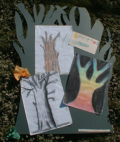
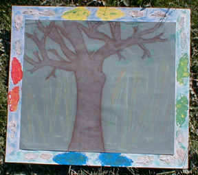
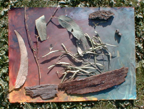

A World Community of Old Trees
Student Project
Galen College
Wangaratta, Victoria, Australia

Box Ironbark Trees
Over the past term we have conducted some research on a local forest of "Box Ironbark Trees" and produced a collaborative art project based on our visits to the forest and a research of these trees. Students are learning about the importance of their local environment and issues of biodiversity and old growth forests as a springboard for creating art together. These art works done by students in year 8 are based on an old Ironbox tree from our nearby Killawarra Forest. The box Ironbark Forests are endangered and there are not many old trees in the forests due to forest practices in the past. This tree is about 300-500 years old and it is probably the oldest in this forest.
- Jim Samon
Arts Convenor
Galen College
Wangaratta, Victoria, Australia


 Return to Main Page
Return to Main Page
Comments
Please send e-mail to: June Julian jj68@nyu.edu